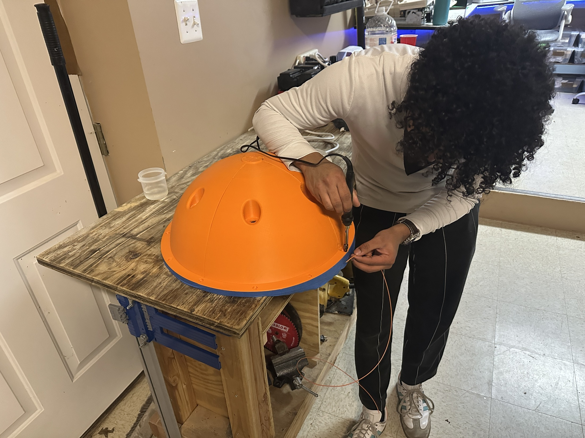
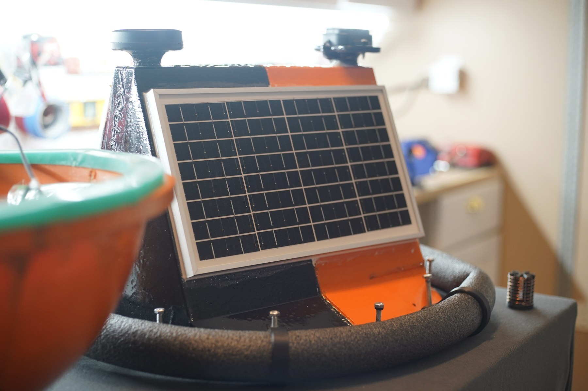
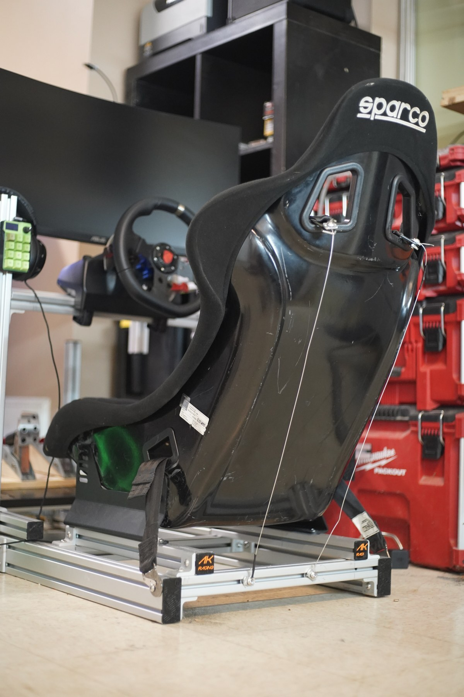

Research / software / October 2026 · iterative development
AnTrust Variance Metrics ↗
An analysis and reporting workspace developed around the board-measurement workflow in my AnTrust metrology internship.
Projects, photos & notes
My project records, photographs, and short video clips are collected here.
See the projects →
Projects
Build photos, CAD, tests, and the problems I ran into along the way.
Research / software / October 2026 · iterative development
An analysis and reporting workspace developed around the board-measurement workflow in my AnTrust metrology internship.

Team / environmental engineering / 2025–2026 · testing
An enclosure, sensor, power, and telemetry project with Atholton Electronics Club.

Mechanical / controls / 2023–2026 · ongoing
Cockpit structure, actuator hardware, drive electronics, CAD, and axis tests.
Photography
Night streets, floodlights, water, and the small details I would otherwise walk past.
Open the contact sheet ↗Personal albums